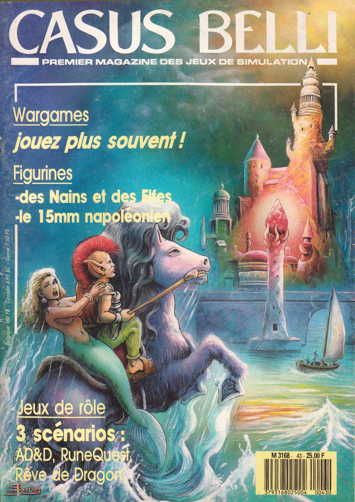
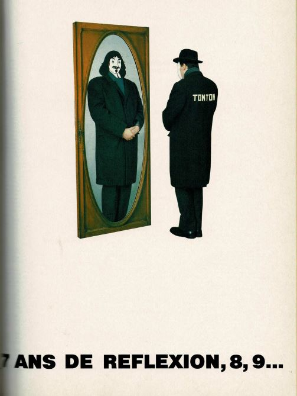
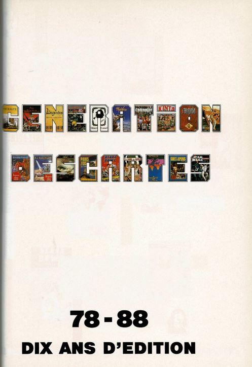
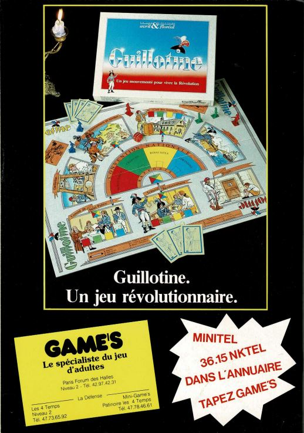

Le Casus 43 commence à pointer son nez dans les crémeries. Bonne année 1988 donc ! puisque c’est ce sur quoi ouvre ce numéro 43, derrière une couverture de Denis Boras.

Quoi de beau avec ces premiers mois de janvier – février 1988 ? On peut maintenant relier avec les chroniques des numéros précédents : l’Afghanistan, l’Iran et l’Irak, le Liban vont connaître des dénouements mais nous en reparlerons au fur et à mesure que l’année se déroule. Car en cette année 1988, c’est un autre pays qui va occuper l’actualité, l’Arménie, avec en ces premières semaines de 1988 le début le conflit du Haut-Karabagh, qui perdure toujours malgré la chute l’URSS. Autre conflit naissant avec des répercussions encore très directes, la première Intifada palestinienne qui voit la création du Hamas et qui remet sous les feux de l’actualité l’épineuse question des Territoires Occupés, qui restent malgré les années et les générations encore et toujours des territoires occupés… L’Amérique Centrale est encore une question centrale avec la situation au Nicaragua qu’on avait pu évoquer auparavant, et les tentatives de déstabilisation du gouvernement sandiniste. Le Rideau de Fer reste bien tendu, mais il va aussi commencer à se froisser, préparant ainsi les événements de 1989…
Sous nos latitudes plus franco-françaises, c’est surtout l‘année électorale qui va occuper ce début de 1988 avec les candidatures successives annoncées en ce début d’année de Jacques Chirac puis Raymond Barre. Je pique avec un petit peu d’avance la publicité Descartes de l’époque (on la trouve dans le CB 44) car on retrouve bien l’écho à cette ambiance « politique » de début d’année, avec cette pub qui pastiche les slogans de la campagne électorale qui se profile.
La pub Descartes côté pile


La version officielle politique côté face
Spoiler:
Et puis tant qu’à anticiper et parler de publicité, je mets aussi la 4ème de couverture de ce CB 43 qui montre aussi qu’on commence à préparer la célébration du bi-centenaire de la Révolution Française qui va marquer l’année 1989 (je garde personnellement pas mal de souvenirs de cet événement).

Justement que trouve-t-on donc dans le Casus de ce nouvel an ? Même si on est encore dans les frimats de l’Hiver, la saison des Conventions redémarre après la trêve de fin d’année : Salon de Cannes où le jdr est encore très marginal (on en parlera dans le n°44), Jet d’Or à Vitrolles qui draine des centaines de participants, Manu à Nantes, et annonce déjà des dates de la 3ème édition du Salon des Jeux de Réflexion à Paris Porte de Versailles (seule la première édition aura eu lieu au CNIT de La Défense).
Le calendrier des sorties est sage : les éditeurs sortent de la zone des congés de Noël, ainsi que manifestement les porte-monnaies. Les Têtes d’Affiche sont donc éclectiques, avec la revue de Légendes de la Vallée des Rois (avec sa BD !), mais aussi des jeux de plateau comme Dungeonquest chez Games Workshop - jeu suédois (déjà  ) qui suit le succès de Talisman et qui annonce le futur Heroquest ? -, et Maxi Bourse chez Schmidt dont j’avais parlé précédemment et qui a le droit à une critique dithyrambique ! Le space opera est aussi à l’honneur avec l’excellent Guide de Star Wars (Star Wars Sourecebook, le jeu n’est pas encore traduit), et la 2ème édition d’Empire Galactique dans son format improbable. Dans un Futur (relativement) moins lointain, on trouvera aussi des Têtes d’Affiche pour des suppléments Judge Dredd (Companion), Jorune (Burdoth Ardoth) et même Battletech (Technical Readout 3026). Ces dernières références très confidentielles (qui les a aujourd’hui dans sa ludothèque, et mieux qui les avait à l’époque ?) montrent que le critique Casus n’avait pas grand-chose à se mettre sous la dent !
) qui suit le succès de Talisman et qui annonce le futur Heroquest ? -, et Maxi Bourse chez Schmidt dont j’avais parlé précédemment et qui a le droit à une critique dithyrambique ! Le space opera est aussi à l’honneur avec l’excellent Guide de Star Wars (Star Wars Sourecebook, le jeu n’est pas encore traduit), et la 2ème édition d’Empire Galactique dans son format improbable. Dans un Futur (relativement) moins lointain, on trouvera aussi des Têtes d’Affiche pour des suppléments Judge Dredd (Companion), Jorune (Burdoth Ardoth) et même Battletech (Technical Readout 3026). Ces dernières références très confidentielles (qui les a aujourd’hui dans sa ludothèque, et mieux qui les avait à l’époque ?) montrent que le critique Casus n’avait pas grand-chose à se mettre sous la dent !
Heureusement, si la production JDR est relativement peu abondante en ce début d’année, les rubriques Ciné / SF / BD sont raisonnablement fournies : le festival d’Avoriaz aujourd’hui disparu dans les limbes met à l’honneur, en cette année 1988, Robocop, Hellraiser, Princess Bride ou Chinese Ghost Story, même si le Jury va donner son prix contre toute attente à The Hidden (ce film parle encore à qui ?) ; chez M. Wagner, on parlera de Silverberg (L’Etoile des Gitans) et de réédition de K. Dick et Howard (Le temps désarticulé et L’Île des Epouvantes, respectivement). Quant à la BD, c’est aussi l’abondance avec pas mal de séries encore dans les mémoires : XIII (dont le 4ème tome SPADS vient seulement de sortir), Les Tours de Bois Maury, Les Eaux de Mortelune, et même un détour par les comics avec Les Gardiens (The Watchmen en VF dans le texte !).
Mais revenons au JDR : pas de grosse actualité si ce n’est une publicité sur trois pages de Descartes façon générique de début pour annoncer la sortie maintenant imminente de la VF de Star Wars, et Oriflam qui se paye aussi une pub pleine page pour annoncer la sortie prochaine de Hawkmoon (tiens tiens) !! Oriflam encore, où la sortie de la VF de Runequest est aussi mise en lumière avec une critique pleine page sur la base d’une version préparatoire du jeu, mais un tel événement n’attend pas (ça se gâte malheureusement ensuite, accrochez-vous à votre clavier).
Allez, on passe sur les aides de jeu : encore beaucoup de matériel Laelith comme dans le précédent numéro, notamment avec une maison close de luxe et aux charmes spéciaux, et avant de le taxer de recyclage des poncifs masculins des années 1980, on précisera qu’il est rédigé par une rédactrice !! La partie Wargame se pré-occupe d’un loisir qui devient de plus en plus en marginal par rapport à l’explosion du jeu de rôle : si cette partie a encore une pagination conséquente dans les pages de CB, elle se consacre donc dans ce numéro à intensifier la pratique, notamment en favorisant le jeu solo ou par correspondance. Assez amusant pour ce dernier de relire qu’il se limite alors au seul canal possible de l’époque, le courrier papier, et la recherche de partenaires par les Petites Annonces de Casus. Cela dit, les conseils sont beaux et bons, et si cette pratique est certainement tombée en désuétude, elle avait son charme comme le retranscrit très bien l’article. Même si c’est encore assez embryonnaire, et que la rubrique Wargames de ce numéro s’intéresse encore au jeu traditionnel, les rédacteurs pressentent que l’informatique naissante est aussi l’espoir de révolutionner tout ceci ! (on a d’ailleurs une partie Ludotique dans ce numéro qui chronique deux wargames informatiques – Battlefront et Battles in Normandy même si on devine que c’est encore assez rudimentaire…)
Je termine comme d’habitude sur les scénarios qui peuvent justifier que vous acquériez – ou non – cette pièce de collection. Trois propositions pour ce numéro : un AD&D, L’Héritage de Denis Beck, dont j’avais bien aimé la relecture dans le Recueil Laelith de BBE qui l’a repris : l’intrigue qui le sous-tend est un peu tortueuse, et il y a un mini-donjon et de multiples possibilités de fin, même si ça exploite très peu Laelith puisqu’il se déroule en dehors de la Ville Sainte. Un Rêve de Dragon de Denis Gerfaud, mineur, qui vaut surtout par les courses d’escargot qu’il met en scène. Et enfin un Runequest par Guillaume d’Orbeville qu’on pouvait attendre comme la pièce de choix avec la sortie de la VF de Runequest et qui est juste désolant : intrigue nulle, décor gloranthien sans intérêt qui recycle juste les clichés du med fan, c’est lamentable d’avoir passé une telle production, et c’est à décourager des éventuels acquéreurs du jeu. Pour pasticher le résumé dans le sommaire, on trouve un nain borgne, un canard et c’est du Tex Avery. L’illustrateur, Xavier Duvet, rend lui-même hommage à la médiocrité de l’ensemble et je ne résiste pas à vous reproduire son Druzzt pour que vous jugiez vous-même du ratage intégral de la chose…
Pas étonnant avec de telles représentations que Runequest continue à souffrir de sa réputation d’être un excellent jeu med fan, mais pas crédible parce qu’il y a des canards ! Je rappelle que quelques numéros avant (CB 38), on avait un autre scénario Runequest, notamment du jeune Frédéric Weil qui traînait lui aussi ses guêtres comme le jeune @Tristan , et qui était bien plus respectueux et ancré dans la mythologie Runequest (même si son développement n’était pas foufou).
Au final, pas un numéro très mémorable (*) : pour faire durer le teaser, le changement est en effet à venir avec le numéro 44 !
(*) si le numéro vous a quand même donné envie de l’ajouter dans votre collection, il est trouvable à 5 € sur Rakuten.